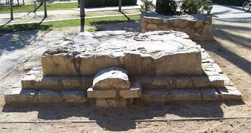
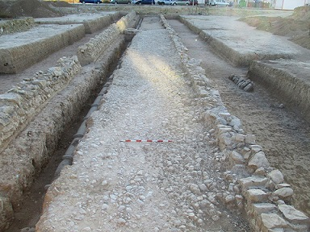

|
VILLAJOYOSA
|
|||||||||
|
Sus vestigios se remontan a la Edad de Bronce. El cerro donde se asienta el casco antiguo era una ciudad ibérica y existen razones fundadas para identificarla con la Alonis (Allon) de los textos clásicos. El santuario ibero-romano del Tossal de la Malladeta. Data de los siglos IV a.e.c. y siglo I. Estaba dedicado a la Diosa Madre. Se destruyó por completo para construir un complejo de habitaciones que cubría toda la parte alta del cerro. Las excavaciones han permitido confirmar que el santuario se mantuvo en uso hasta al menos el reinado del emperador Nerón. Los materiales romanos encontrados han confirmado que el santuario fue tolerado y posiblemente potenciado, hasta la concesión del estatuto de municipium a Villajoyosa en el año 74 por el emperador Vespasiano.
Mide actualmente 8 metros de altitud, pero en su origen medía 12. Conserva su basamento de cuatro gradas y un cuerpo central, separados por una moldura, las esquinas presentan pilastras lisas. En su interior se halla la cámara funeraria. Recientemente se ha hallado una cantera romana cerca de la torre de Sant Josep. Las nuevas excavaciones del proyecto Villajoyosa Romana en la Torre de Sant Josep, han descubierto un muro romano de hormigón, que encierra un gran recinto funerario rectangular que rodea la torre. Este recinto estaba excavado más de un metro en el terreno, y el muro hacía de pantalla para contener los terrenos circundantes, más altos. Por tanto, hemos de imaginar la torre, de una altura equivalente a un edificio actual de 4 plantas, alzándose en el centro de una gran fosa rectangular artificial, delimitada por la pared de hormigón.
La Torre de San Josep, también
conocida como la Torre de Hércules, es la mayor torre funeraria
conservada en España. Ver Video
El monumento romano de l'Almiserá se localiza en los jardines del Centre Social Llar de Pensionista. El monumento romano procede de un yacimiento situado, en el camino que unía la ciudad romana con el valle de Finestrat. El monumento funerario data del siglo II.
 La villa romana de Barberes Sur se trata de una residencia señorial, construida a las afueras del municipio romano de Allon entre finales del siglo I a.e.c. y principios del siglo I. El Servicio Municipal de Arqueología excavó parte del yacimiento, concretamente una superficie de 510 metros cuadrados, entre los años 2009 y 2012. En 2025, las excavaciones arqueológicas permite localizar 4.000 fragmentos de pinturas del siglo II, parte de una calzada romana, que conectaba la ciudad por la costa con las actuales Benidorm y Altea; y una cantera de áridos destinados a pavimentar la calzada encontrada. La villa se integrará en el parque Palasiet. En Villajoyosa se localiza unos de los bancales agrícolas mas antiguos de Europa. En 2018 se descubrió en un solar próximo a la torre funeraria de Sant Josep, un gran muro de una sola cara de unos 12 metros de largo y casi un metro y medio de alzado, con tres hiladas conservadas, levantadas con grandes piedras calizas del lugar. Es muy similar a otros márgenes de bancal agrícola encontrados en Villajoyosa, el de la Cala (s. III a.e.c.) y el de Puntes del Moro (s. II a.e.c.). El hallazgo en 2017 y recuperación en julio de 2019, permite disfrutar de casi 8,5m de la vía romana en su estado original que unia las urbes de Allon y Lucentum. Data del siglo I, con una anchura de 4,20m. Foto elperiodic.com
 En septiembre de 2020, la calzada se recupera y musealiza. La denominada 'Vía Lucentina', y se sitúa a las afueras de la localidad. De los 50m de calzada se ha recuperado 8.5m. En junio de 2022, trabajadores de excavación arqueológica del entorno de la villa romana de Plans de La Villajoyosa han sacado a la luz una zona industrial y un acueducto de 25m que datan de entre los siglos V y VI. También se han localizado dos conjuntos de tres y seis habitaciones de época romana.
|